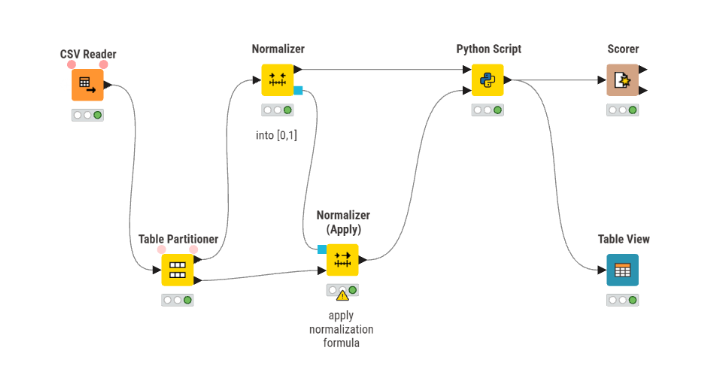
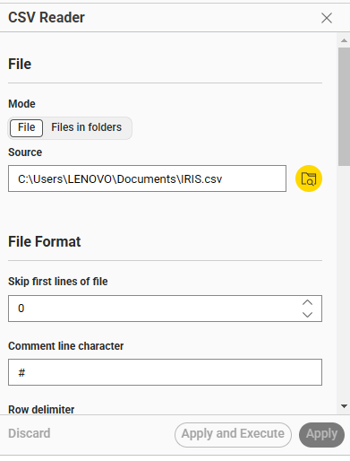
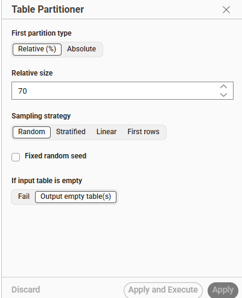
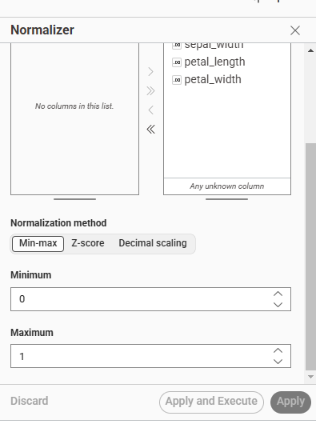
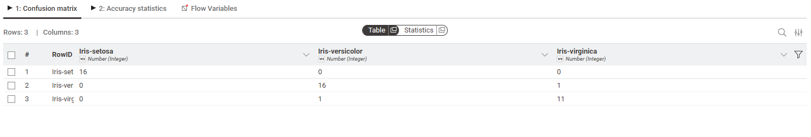
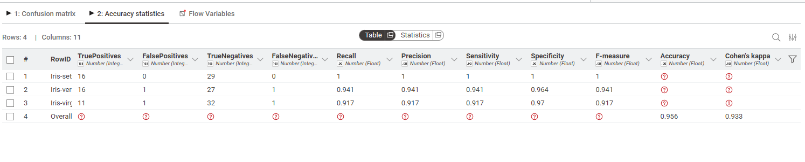
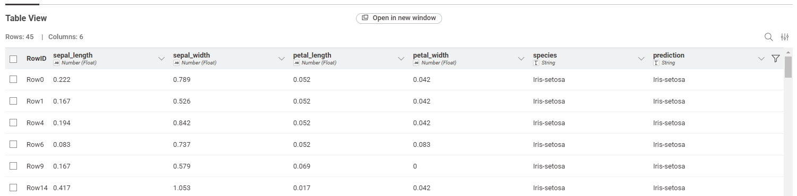

Pertemuan 10#
Naive Bayes#
Pengertian#
Naive Bayes adalah algoritma klasifikasi berbasis probabilitas yang menggunakan Teorema Bayes. Disebut “Naive” (Naif) karena algoritma ini mengasumsikan bahwa setiap fitur dalam data bersifat independen (tidak saling memengaruhi), meskipun dalam kenyataannya seringkali fitur tersebut saling berkaitan.
Rumus Teorema Bayes#
P(C|X) = (P(X|C) * P(C)) / P(X)
Keterangan:
P(C|X): Peluang kelas C jika diketahui atribut X (Posterior).
P(X|C): Peluang atribut X jika diketahui kelas C (Likelihood).
P(C): Peluang awal munculnya kelas C (Prior).
P(X): Probabilitas kemunculan atribut X (Evidence).
Jenis-jenis Utama#
Gaussian Naive Bayes: Digunakan untuk fitur berupa angka kontinu (seperti panjang/lebar kelopak bunga).
Multinomial Naive Bayes: Digunakan untuk data teks (frekuensi kata).
Bernoulli Naive Bayes: Digunakan untuk data biner (ya/tidak).
Kelebihan#
Sangat cepat dan efisien secara komputasi.
Bekerja dengan baik pada dataset berdimensi tinggi.
Hanya membutuhkan sedikit data latih untuk memberikan hasil yang baik.
TUGAS#
Laporan Proyek: Klasifikasi Naive Bayes menggunakan KNIME dan Python (Sklearn) Deskripsi Proyek: Proyek ini bertujuan untuk membangun model klasifikasi menggunakan algoritma Gaussian Naive Bayes dari library scikit-learn Python, yang dijalankan di dalam platform KNIME. Dataset yang digunakan adalah dataset IRIS (terlihat dari label kelas seperti Iris-setosa, Iris-versicolor, dan Iris-virginica).

Langkah-langkah Pembuatan Workflow
Membaca Data (CSV Reader)

Node: CSV Reader
Fungsi: Mengimpor dataset ke dalam environment KNIME.
Konfigurasi: File dibaca dari direktori lokal (C:\Users\LENOVO\Documents\IRIS.csv). Pengaturan dibiarkan secara default untuk membaca file teks terstruktur dengan karakter # sebagai penanda komentar jika ada.
Membagi Data Latih dan Data Uji (Table Partitioner)

Node: Table Partitioner
Fungsi: Membagi dataset utuh menjadi dua bagian: Training Data (Data Latih) dan Testing Data (Data Uji).
Konfigurasi: Menggunakan metode Relative (%) dengan rasio 70%. Strategi sampling yang digunakan adalah Random, sehingga 70% data akan dialirkan ke port atas (untuk dilatih) dan 30% ke port bawah (untuk diuji).
Normalisasi Data Latih (Normalizer)

Node: Normalizer
Fungsi: Mengubah skala nilai pada fitur numerik agar berada dalam rentang yang seragam. Ini penting agar tidak ada fitur yang mendominasi hanya karena skala angkanya lebih besar.
Konfigurasi: Menggunakan metode Min-max normalization dengan rentang nilai dari 0 hingga 1. Node ini memproses data latih dan menghasilkan model normalisasi (ditandai dengan kotak biru pada output) yang menyimpan parameter batas minimum dan maksimum dari data latih.
Normalisasi Data Uji (Normalizer Apply)
Node: Normalizer (Apply)
Fungsi: Menerapkan skala normalisasi yang sama persis dengan data latih ke data uji.
Konfigurasi: Node ini menerima input model dari Normalizer (jalur biru) dan menerapkannya pada data dari port bawah Table Partitioner. Hal ini merupakan praktik terbaik (best practice) Machine Learning untuk mencegah data leakage (kebocoran informasi).
Implementasi Naive Bayes (Python Script)
Node: Python Script
Fungsi: Mengeksekusi kode Python untuk melatih model algoritma Gaussian Naive Bayes dan melakukan prediksi pada data uji.
Proses:
Node menerima 2 input tabel: Data latih (Input 1) dan Data uji yang sudah dinormalisasi (Input 2).
Fitur (X) diambil dari semua kolom kecuali kolom terakhir, sedangkan target (y) diambil dari kolom terakhir (spesies).
Model dilatih menggunakan model.fit(X_train, y_train).
Model melakukan prediksi terhadap X_test menggunakan model.predict(X_test).
Hasil prediksi ditambahkan sebagai kolom baru bernama prediction pada tabel data uji dan dikeluarkan ke output port.
Script yang Digunakan:
import knime.scripting.io as knio
import pandas as pd
from sklearn.naive_bayes import GaussianNB
from sklearn.metrics import classification_report
# Membaca data latih dan uji dari input port KNIME
train_df = knio.input_tables[0].to_pandas()
test_df = knio.input_tables[1].to_pandas()
# Memisahkan fitur (X) dan target (y)
X_train = train_df.iloc[:, :-1]
y_train = train_df.iloc[:, -1]
X_test = test_df.iloc[:, :-1]
y_test = test_df.iloc[:, -1]
# Inisialisasi dan melatih model Naive Bayes
model = GaussianNB()
model.fit(X_train, y_train)
# Melakukan prediksi
y_pred = model.predict(X_test)
# Menyiapkan tabel output dengan kolom prediksi baru
output_df = test_df.copy()
output_df["prediction"] = y_pred
# Mengirim data kembali ke KNIME
knio.output_tables[0] = knio.Table.from_pandas(output_df)
print(classification_report(y_test, y_pred))
Evaluasi Model (Scorer)


Node: Scorer
Fungsi: Membandingkan label kelas asli (species) dengan hasil tebakan model (prediction) untuk menghitung metrik evaluasi.
Hasil Evaluasi (Berdasarkan Gambar Statistik):
Akurasi Keseluruhan (Accuracy): 0.956 atau 95.6%
Cohen’s Kappa: 0.933
Confusion Matrix:
Iris-setosa: 16 diprediksi benar, 0 salah. (Precision/Recall: 1.0 / 1.0)
Iris-versicolor: 16 diprediksi benar, 1 diprediksi salah sebagai virginica. (Recall: 0.941)
Iris-virginica: 11 diprediksi benar, 1 diprediksi salah sebagai versicolor. (Recall: 0.917) Model bekerja dengan sangat baik dan hanya mengalami sedikit kesulitan membedakan antara Versicolor dan Virginica (masing-masing 1 kesalahan klasifikasi).
Visualisasi Tabel Hasil (Table View)

Node: Table View
Fungsi: Menampilkan output akhir berupa tabel interaktif di mana pengguna bisa melihat langsung deretan data yang sudah dinormalisasi beserta kolom label aktual (species) dan label tebakan mesin (prediction).
Kesimpulan#
Secara keseluruhan, proyek ini sukses mengintegrasikan alur kerja visual KNIME dengan model Gaussian Naive Bayes dari Python, sembari menerapkan langkah pra-pemrosesan yang tepat untuk mencegah kebocoran data (data leakage). Model yang dibangun terbukti sangat andal dengan pencapaian akurasi sebesar 95,6%, di mana kelas Setosa berhasil diidentifikasi dengan sempurna, dan hanya terdapat sangat sedikit kesalahan klasifikasi yang wajar antara Versicolor dan Virginica akibat kemiripan alami fitur keduanya.